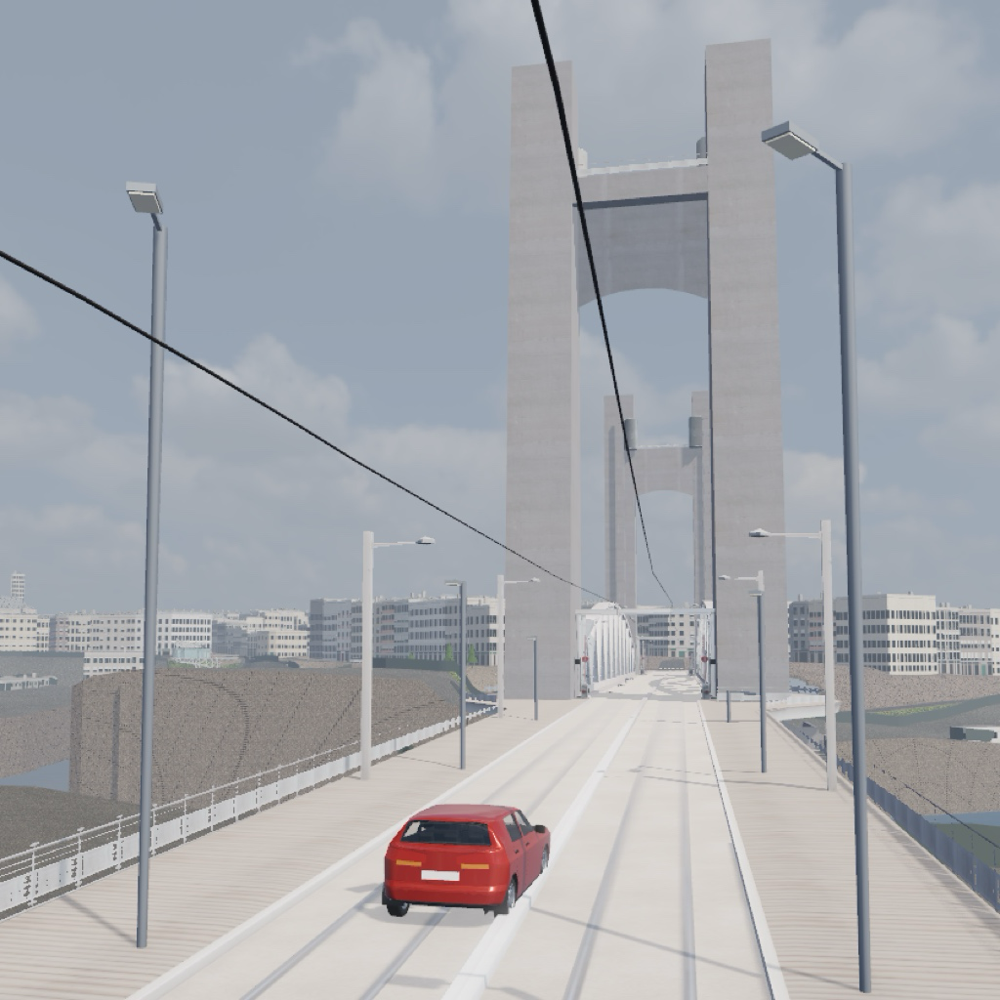

La démo : le centre-ville
Rouler dans les vraies rues de Brest, de la place de la Liberté au pont de Recouvrance par la rue de Siam, avec le tram, les bus, les piétons et la circulation. La ville est bâtie d'après les données publiques de l'IGN, d'OpenStreetMap et de Brest métropole.
Toute la commune de Brest arrive bientôt dans l'app pour iPhone et iPad.
Sur un téléphone ou une tablette, il faut un appareil récent : sur un modèle ancien, le navigateur peut manquer de mémoire et recharger la page. Le jeu est plus à l'aise dans l'app, ou sur un ordinateur.
Téléchargement : environ 150 Mo, la première fois seulement.
Clavier : flèches (ou Z Q S D) pour conduire, Espace pour le frein à main, C pour la vue, O pour la radio, 1 à 6 pour les points de départ, P pour une mission de stationnement, F1 pour l'aide. Manette : gâchettes et stick.
Données : IGN, © les contributeurs d'OpenStreetMap, cadastre DGFiP, Brest métropole (Licence Ouverte 2.0). Le site du jeu
Moteur : Godot Engine (godotengine.org), licence MIT. Copyright (c) 2014-present Godot Engine contributors (see AUTHORS.md). Copyright (c) 2007-2014 Juan Linietsky, Ariel Manzur. Permission is hereby granted, free of charge, to any person obtaining a copy of this software and associated documentation files (the "Software"), to deal in the Software without restriction, including without limitation the rights to use, copy, modify, merge, publish, distribute, sublicense, and/or sell copies of the Software, and to permit persons to whom the Software is furnished to do so, subject to the following conditions: The above copyright notice and this permission notice shall be included in all copies or substantial portions of the Software. THE SOFTWARE IS PROVIDED "AS IS", WITHOUT WARRANTY OF ANY KIND, EXPRESS OR IMPLIED, INCLUDING BUT NOT LIMITED TO THE WARRANTIES OF MERCHANTABILITY, FITNESS FOR A PARTICULAR PURPOSE AND NONINFRINGEMENT. IN NO EVENT SHALL THE AUTHORS OR COPYRIGHT HOLDERS BE LIABLE FOR ANY CLAIM, DAMAGES OR OTHER LIABILITY, WHETHER IN AN ACTION OF CONTRACT, TORT OR OTHERWISE, ARISING FROM, OUT OF OR IN CONNECTION WITH THE SOFTWARE OR THE USE OR OTHER DEALINGS IN THE SOFTWARE. Portions of this software are copyright © The FreeType Project (www.freetype.org). All rights reserved. Symboles : police DejaVu Sans (dejavu-fonts.github.io), réduite, licence Bitstream Vera. Autoradio : musiques de Joth, RandomMind et omfgdude (opengameart.org, CC0) ; Radio Brenik : morceaux de Brenik (soundcloud.com/lucien-oulhen), avec l'accord de l'auteur, tous droits réservés.
